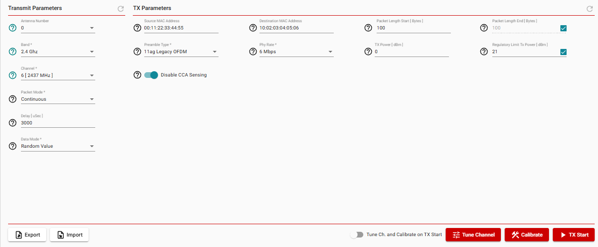
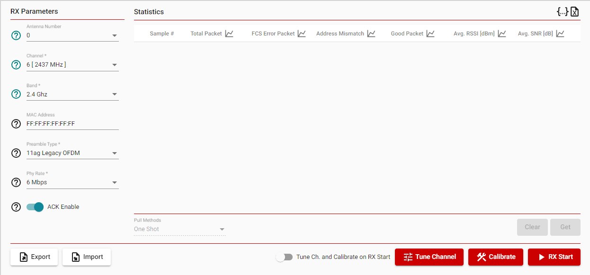
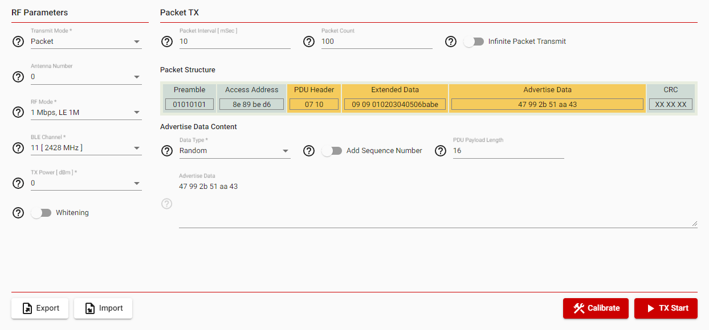
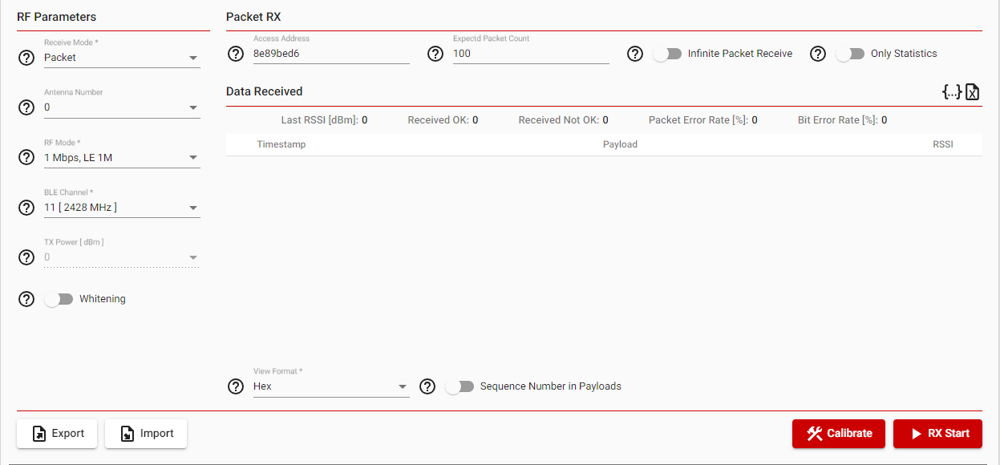
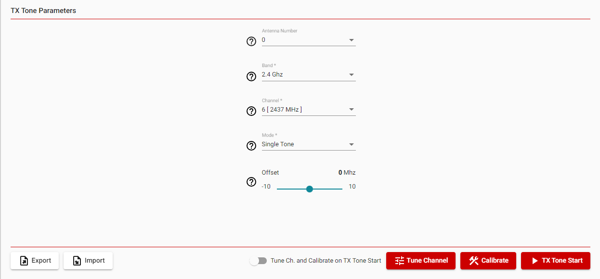
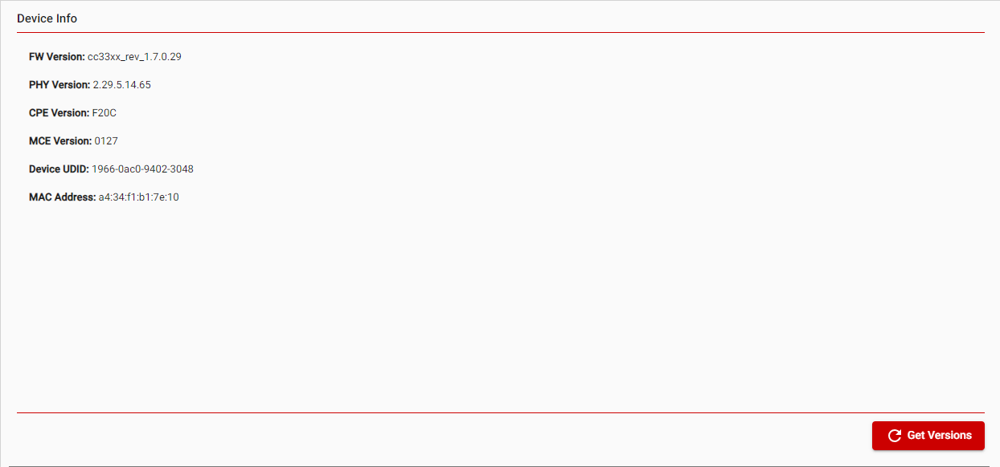
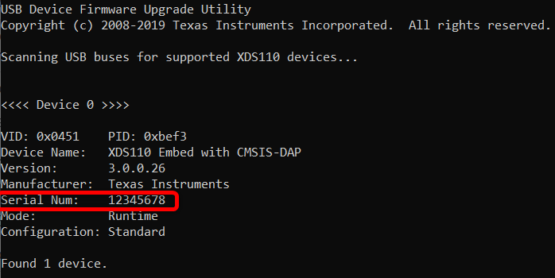

Radio Tool User’s Guide¶
Overview¶
Radio Tool is a tool for RF evaluation and testing during development and certification. The tool enables low-level radio testing capabilities by manually setting the radio into transmit or receive modes. Usage of the tool requires familiarity and knowledge of radio circuit theory and radio test methods.
HW Prerequisites¶
- Windows 10 64Bit / Ubuntu 20 (or higher) 64bit operation system
- Latest Chrome Web Browser
- Installation of SimpleLink ™ Wi-Fi Toolbox (refer to SimpleLink Wi-Fi Toolbox Startup Guide)
- CC33xx/CC35xx evaluation boards
- An LP-XDS110ET debugger for SWD communication
Radio Tool Startup¶
Open SimpleLink Wi-Fi Toolbox and click on the “Radio Tool” button:
{kind=link}
The app will route to the next page “Radio Tool Intro”, where a user should select their current device:
- Device Part Number * CC3500 * CC3501 * CC3550 * CC3551
Open SimpleLink Wi-Fi Toolbox and click on the “Radio Tool” button:
{kind=link}
The app will route to the next page “Radio Tool Intro”, where a user should select their current device:
- Device Part Number
- CC3300 - 2.4Ghz 11ax Wi-Fi Transceiver
- CC3301 - 2.4Ghz 11ax Wi-Fi and BLE Transceiver
- CC3350 - 2.4 / 5 Ghz 11ax Wi-Fi Transceiver
- CC3351 - 2.4 / 5 Ghz 11ax Wi-Fi and BLE Transceiver
- CC3301MOD - 2.4Ghz 11ax Wi-Fi and BLE Transceiver
- CC3351MOD - 2.4 / 5 Ghz 11ax Wi-Fi and BLE Transceiver
Device Connection Interface
Demo Mode - Users can experience the operation of Radio Tool without being connected to a real device.
XDS110 - This connection interface requires connecting a XDS110 debug probe to the device under test (CC35xx/cc33xx).
- XDS110 Serial Number - The app will display the serial number of all connected XDS110 devices to the PC.
Note
- In case of multiple XDS110 connected devices to the PC, see section How to Detect my XDS110 JTAG Debug Probe Serial Number
- In case of old firmware version of XDS110 follow instruction from
<simplelink_wifi_toolbox_x.x.x installation folder>\utility\xds110_reset\README
Device Region
The device region will configure the device to follow the selected regions transmission regulations. This is done by loading the appropriate conf.bin
Containers Load
The app provides a couple of ways of loading software into CC35XX devices
- Load custom containers - Follow How to Load Custom Containers for more info.
- Load official container - SimpleLink Wi-Fi Toolbox comes with integrated official software that can be used on the device.
- Use pre-loaded container - The user can start using Radio Tool based on pre-loaded software from one of the options above.
After filling the fields as described above click on Start
{kind=link}
After clicking on the Start the app will route into the “Radio Tool Home” page
{kind=link}
Note
The content and options seen will change according to the selected operation, see sections “Wi-Fi testing”, “Bluetooth ® Low Energy testing”, “TX Tone”, “Device Info”
Radio Tool page contains:¶
- Top Toolbar - Description of connection interface and connected device
{kind=link}
- Left Side Navigation Bar - Will display different options according to selected device, active test mode will be outlined in red
{kind=link}
- Terminal - Logs of all activities while using Radio Tool
{kind=link}
Note
The two blue icons, that apppear on the top right when hovering over the terminal window, are to “Clear Terminal” logs and to “Save Terminal Data” as a .txt file.
Wi-Fi testing¶
The CC35xx/CC33xx devices features Wi-Fi 6 with 2.4 GHz, 5 Ghz, 20 MHz, single spatial stream, MAC, baseband, and RF transceiver with support for IEEE 802.11 b/g/n/ax. The below sections explain how to use the Radio Tool toolbox for testing Wi-FI and the limitations of the tool.
Wi-Fi TX¶
In this mode the device will transmit packets depending on the chosen parameters. To get optimal RF performance first press Tune Channel, then Calibrate, and lastly TX Start respectively every time the chosen channel is changed.
Hint
The user may toggle the Tune Ch. and Calibrate on TX start instead of manually pressing the Tune Channel button, then Calibrate before TX Start
{kind=link}

Figure 16 View of RadioTool Wi-Fi TX mode
Action¶
| Action | Description |
|---|---|
| Export | Export current selected parameters into JSON file |
| Import | Import parameters from JSON file |
| Tune Ch. and Calibrate on RX start | When enabled will tune and calibrate the device before starting transmission |
| Tune Channel | The device will be tuned to the selected frequency channel |
| Calibrate | Will calibrate the device to improve RF performance |
| TX Start / Stop | Start / Stop transmit Wi-Fi packet according to selected parameters |
Transmit Parameters Section¶
| Field | Options | Description |
|---|---|---|
| Antenna Number | 0 (Default) or 1 | Select main antenna to transmit from |
| Band | 2.4 Ghz
5 Ghz
|
WLAN frequency band |
| Channel | 1 - 13 (Default : 6)
36 - 165 (Default : 36)
|
Operating frequency range within the selected WLAN frequency band |
| Packet Mode | Continuous
Single Packet
Multi Packet
|
Sends an infinite number of packets on TX Start
Send one packet on TX Start
Send the finite amount of packets according to “Number Of Packets” on TX Start
|
| Delay [uSec] | 50 - 1000000 | Delay between packets |
| Number of Packets | 1 - 10000 | Enabled for Multi Packet Mode |
| Data Mode | Constant Value
Increment
Random Value
|
Constant packet payload according to “Data Const Value”
Packet payload will increase by one each sent packet
Random packet payload
|
| Data Const Value | 0 - 255 | Constant value used in all packets |
TX Parameters Section¶
| Field | Options | Description |
|---|---|---|
| Source MAC Address | 00:11:22:33:44:55 (Default) | MAC (media access control) Address being received |
| Destination MAC Address | 01:02:03:04:05:06 (Default) | MAC (media access control) Address being transmitted |
| Packet Length [Bytes] when “CCA Sensing” Disabled (Default) | 0 - 3500 | Number of data bytes (except mac 802.11 header) when “Disable CCA Sensing” is checked |
| Packet Length [Bytes] when “CCA Sensing” Enabled | Constant start of value 0-16000 | Number of data bytes (except mac 802.11 header) when “Disable CCA Sensing” is unchecked |
| Preamble Type | 11b Short Preamble
11b Long Preamble
11ag Legacy OFDM
11n Mixed Mode
11ac VHT
11ax SU (Single User)
11ax SU ER (Single User Extended Range)
11ax TB (Trigger Base)
|
The Preamble type in 802.11 based wireless communication defines the length of the CRC |
| Regulatory Limit Tx Power (dBm) | Enable / Disable (dBm level) | If enabled, permits the bypass of regulatory Tx power limits |
Some of the options below will appear according to selected Preamble Type.
| Field | Options | Description |
|---|---|---|
| PHY Rate [Mbps] | Available options change according to selected preamble type | Maximum speed that data can move across a wireless link |
| TX Power [dBm] | -10 to 21 | Transmit power level |
| Disable CCA Sensing | Disable/Enable ( Default ) | Select to ignore Wi-Fi CCA (Clear Channel Assessment) |
| GL/LTF Type | Available options change according to selected preamble type | Common Info field that indicates which guard interval and long training field will be used for the transmission |
| BSS Color | 0 to 63 | Identifies a BSS and assists a STA receiving a PPDU that carries BSS from which the PPDU originates so that the STA can use the channel access rules |
| Nominal Packet Padding [μsec] | 0 usecs
8 usecs
16 usecs
|
Value indicated by the Pre-FEC Padding Factor subfield in the Common Information Field in the Trigger Frame |
| SU ER Bandwidth | 242 tone RU
Upper Frequency 106 tone RU
|
Indicates the channel width of the PPDU. Enumerated type: ER-RU-242 for the 242-tone |
| TB mode | External Trigger
Autonomous
|
Sets the device to expect an external trigger before transmitting, or to do so autonomously with internal triger |
| AID | 0 to 2047 | Association Index |
| Num of HeLtf | 1 HeLtf
2 HeLtf
4 HeLtf
6 HeLtf
8 HeLtf
|
Number of HE-LTF symbols |
| RU Allocation | 0 to 2047 | Resource unit (RU) assigned for transmitting the HE TB PPDU response |
| Uplink BW | 20 MHz
40 MHz
80 MHz
|
Common Information filed indicates the bandwith in the HE-SIG-A filed of the HE TB PDDU |
Note
Some field options may appear and disappear depending on selections made
TX Power Limitation¶
Depending on the Preamble Type the device will not transmit at the highest power set by the user on TX Power [dBm], this is a limit set by the firmware on the device. Refer to the table below for the resulting TX power from the CC35xx/CC33xx device.
| Preamble Type | Phy Rate | Expected power (from device pin) |
| 11b Short Preamble | 2 Mbps | 20.5 dBm |
| 5.5 Mbps | 20.5 dBm | |
| 11 Mbps | 20.5 dBm | |
| 11b Long Preamble | 1 Mbps | 20.5 dBm |
| 2 Mbps | 20.5 dBm | |
| 5.5 Mbps | 20.5 dBm | |
| 11 Mbps | 20.5 dBm | |
| 11ag Legacy OFDM | 6 Mbps | 20.5 dBm |
| 9 Mbps | 20.5 dBm | |
| 12 Mbps | 20.5 dBm | |
| 18 Mbps | 20 dBm | |
| 24 Mbps | 18 dBm | |
| 36 Mbps | 18 dBm | |
| 48 Mbps | 18 dBm | |
| 54 Mbps | 18 dBm | |
| 11n Mixed Mode | MCS0 | 20.5 dBm |
| MCS 1 | 20.5 dBm | |
| MCS 2 | 20 dBm | |
| MCS 3 | 18 dBm | |
| MCS 4 | 18 dBm | |
| MCS 5 | 18 dBm | |
| MCS 6 | 18 dBm | |
| MCS 7 | 18 dBm | |
| 11ax SU | MCS 0 | 20.5 dBm |
| MCS 1 | 20.5 dBm | |
| MCS 2 | 20 dBm | |
| MCS 3 | 18 dBm | |
| MCS 4 | 18 dBm | |
| MCS 5 | 18 dBm | |
| MCS 6 | 18 dBm | |
| MCS 7 | 18 dBm | |
| 11ax SU ER | MCS 0 | 20.5 dBm |
| 11ax TB | MCS 0 | 20.5 dBm |
| MCS 1 | 20.5 dBm | |
| MCS 2 | 20 dBm | |
| MCS 3 | 17 dBm | |
| MCS 4 | 17 dBm | |
| MCS 5 | 17 dBm | |
| MCS 6 | 17 dBm | |
| MCS 7 | 17 dBm |
Wi-Fi RX¶
RX testing is used for gathering Wi-Fi statistics within a specified channel. To get optimal RF performance first press Tune Channel, then Calibrate, and lastly RX Start respectively every time the chosen channel is changed.
Hint
The user may toggle the Tune Ch. and Calibrate on RX start instead of manually pressing the Tune Channel button, then Calibrate before RX Start
{kind=link}

Figure 17 View of RadioTool Wi-Fi RX mode
Action¶
| Action | Description |
|---|---|
| Export | Export current selected parameters into JSON file |
| Import | Import parameters from JSON file |
| Tune Ch. and Calibrate on RX start | When enabled will tune and calibrate the device before starting transmission |
| Tune Channel | The device will be tuned to the selected frequency channel |
| Calibrate | Will calibrate the device to improve RF performance |
| RX Start / Stop | Start / Stop receiving Wi-Fi packet according to selected parameters |
RX Parameters Section¶
| Field | Options | Description |
|---|---|---|
| Band | 2.4 Ghz
5 Ghz
|
WLAN frequency band |
| Channel | 1 - 13 (Default : 6)
36 - 165 (Default : 36)
|
Operating frequency range within the selected WLAN frequency band |
| MAC Address | FF:FF:FF:FF:FF:FF | Source mac address of received packet |
| Preamble Type | 11b Short Preamble
11b Long Preamble
11ag Legacy OFDM
11n Mixed Mode
11ac VHT
11ax SU (Single User)
11ax SU ER (Single User Extended Range)
11ax TB (Trigger Base)
|
The Preamble type in 802.11 based wireless communication defines the length of the CRC |
| PHY Rate [Mbps] | Options change according to selected preamble type | Maximum speed that data can move across a wireless link |
| ACK Enable | Enable ( Default ) / Disable | Select to response with Wi-FI ACK for each received packet |
Statistics Section¶
Note
- Get / Clear / Stop actions will be available on successful RX Start
- Each new sample will be appearing in the first row of the table
- RX RSSI reporting is not optimized.
| Field | Options | Description |
|---|---|---|
| Pull Method | One Shot | Get statistics by clicking on the Get button |
| Pull Method | Interval | Get statistics by each “Pull Interval [Sec]” |
| Pull Method | Interval & Count | Get statistics on the finite number of samples by “Number of Samples” each “Pull Interval [Sec]” |
| Action | Description |
|---|---|
| Get | Get statistics according to Pull Methods |
| Clear | Clear statistics table |
| Stop | Will appear for pull method “Interval” / “Interval & Count”, stops requesting for statistics. |
| Export statistics table into Excel file | |
| Export statistics table into Excel file |
Warning
RX RSSI reporting is not optimized.
Bluetooth ® Low Energy testing¶
Bluetooth ® Low Energy 5.4 is only for CC35x1/CC33x1 devices, below sections explain how to use the Radio Tool toolbox for testing BLE.
BLE TX¶
Mode to transmit BLE packets.
{kind=link}

Figure 18 View of RadioTool BLE TX mode
Action¶
| Action | Description |
|---|---|
| Export | Export current selected parameters into JSON file |
| Import | Import parameters from JSON file |
| TX Start / Stop | Start / Stop transmit BLE packet according to selected parameters |
RF Parameters Section¶
Section to specify the RF parameters of the BLE transmission
| Field | Options | Description |
|---|---|---|
| Transmit Mode | Packet(Default) | Packet transmit mode |
| Antenna Number | 0 (Default) or 1 | Select main antenna to trasnmit from |
| RF mode | 1 Mbps, LE 1M (Default)
2 Mbps, LE 2M
500 kbps, LE Coded
125 kbps, LE Coded
|
BLE RF mode |
| BLE Channel | 0 - 39 (Default channel 11 ) | Select BLE operating frequency channel |
| TX Power [dBm] | 0 - 20 (Default 0) | Transmit power |
| Whitening | Enable / Disable (Default) | Enable to have packet payload scrambled before transmission |
Packet TX Section¶
Section to specify the parameters of the packets to be transmitted
| Field | Options | Description |
|---|---|---|
| Packet Interval [mSec] | from 10 mSecs | Transmit time between BLE packet packets |
| Packet Count | Use number higher than 1 | Set the number of a packet to transmit |
| Infinite Packet Transmit | Enable / Disable (Default) | Check to transmit an infinite number of packets |
| Packet Structure | Illustration for how packet will be transmitted in the air | |
| Data Type | Standard Patterns - Random
Standard Patterns - Hex
Standard Patterns - Text
Extra Patterns
|
Transmit BLE packet with auto generated data according to required PDU Payload Length
Transmit BLE packet with user provided data in hexadecimal format
Transmit BLE packet with user provided data in ASCII format
Implements “LE Transmitter Test commands” according to Core spec 5.4
|
| Add Sequence Number | Enable / Disable | Enable will add 2 bytes to the beginning of payload |
| PDU Packet Length | 10/12 - 37 | Length of PDU payload |
| Advertise Data | Related to Data Type | Content that will place into PDU payload |
Warning
Setting transmit interval at less than 10 mSec can cause unexpected behavior.
BLE RX¶
Mode to receive BLE packets.
{kind=link}

Figure 19 View of RadioTool BLE RX mode
Action¶
| Action | Description |
|---|---|
| Export | Export current selected parameters into JSON file |
| Import | Import parameters from JSON file |
| RX Start / Stop | Start / Stop receiving BLE packets according to selected parameters |
RF Parameters Section¶
Section to specify the RF parameters of the received signal
| Field | Options | Description |
|---|---|---|
| Transmit Mode | Packet (Default) | Packet receive mode |
| Antenna Number | 0 (Default) or 1 | Select main antenna to receive from |
| RF mode | 1 Mbps, LE 1M (Default)
2 Mbps, LE 2M
500 kbps, LE Coded
125 kbps, LE Coded
|
BLE RF mode |
| BLE Channel | 0 - 39 (Default channel 11 ) | Select BLE operating frequency channel |
| TX Power [dBm] | 0 - 20 (Default 0) | Transmit power |
| Whitening | Enable / Disable (Default) | Enable to have packet payload scrambled before transmission |
Packet RX Section¶
Section to specify the parameters of the packets that will be received
| Field | Options | Description |
|---|---|---|
| Access Address | Hex input of 8 digits | Default access address is 8e89bed6. Note for BLE_TEST packets access address should be 71764129. |
| Expected Packet Count | No Limitation | After receiving all expected packets, RX mode stops automatically |
| Infinite Packet Transmit | Enable / Disable (Default) | Enable “Infinite Packet Transmit” when expected to receive infinite number of packets |
| Only Statistics | Enable / Disable (Default) | Check to show only packets statistics (without payload content) |
Data Received Section¶
Section that displays the statistics of all received packets
| Field | Options | Description |
|---|---|---|
| Last RSSI [dBm] | N/A only results | As part of the broadcast message decoding, the device will return the last Received Signal Strength Indicator (RSSI) value. |
| Received OK: | N/A only results | Total number of received packets succesfully |
| Received Not OK: | N/A only results | Total number of received packets unsuccesfully |
| Packet Error Rate [%] | N/A only results | The Packet Error Rate (PER) indicates how many transmissions from a device are never received by the Network Server. |
| Bit Error Rate [%] | N/A only results | The bit error rate (BER) is the number of bit errors per unit time. |
| View Format | Hex (Default) / Text | Display payload as Hex data or decoded UTF-8 Text |
| Sequence Number in Payloads | Enable / Disable (Default) | EXpected Sequence number to be included in the received packet payload |
Warning
For best experience, transmit data to the device with rate higher than 100msec between packets.
TX Tone¶
In this mode the user may create and transmit the Carrier Wave of a signal with selected tone options. To get optimal RF performance first press Tune Channel, then Calibrate, and lastly TX Start respectively every time the chosen channel is changed.
Hint
The user may toggle the Tune Ch. and Calibrate on RX start instead of manually pressing the Tune Channel button, then Calibrate before TX Start
{kind=link}

Figure 20 View of RadioTool TX Tone mode
Action¶
| Action | Description |
|---|---|
| Export | Export current selected parameters into JSON file |
| Import | Import parameters from JSON file |
| Tune Ch. and Calibrate on RX start | When enabled will tune and calibrate the device before starting transmission |
| Tune Channel | The device will be tuned to the selected frequency channel |
| Calibrate | Will calibrate the device to improve RF performance |
| TX Tone Start / Stop | Start / Stop sending Carrier Wave |
TX Tone Parameters¶
| Field | Options | Description |
|---|---|---|
| Antenna Number | 0 (Default) or 1 | Select main antenna to transmit from |
| Band | 2.4 Ghz
5 Ghz
|
WLAN frequency band |
| Channel | 1 - 13 (Default : 6)
36 - 165 (Default : 36)
|
Operating frequency range within the selected WLAN frequency band |
| Mode | Single Tone | Sends a single tone |
| Silence | Reserved for future release | |
| Carrier Feedthrough | Reserved for future release | |
| Offset [Mhz] | -10 to 10 | Offset carrier frequency by amount chosen |
Device Info¶
The Info mode will display the information of the device, see figure below.
{kind=link}

Figure 21 View of RadioTool Device Info mode
Additional Functions¶
How to Load Custom Containers¶
In some cases, custom containers should be loaded onto the device.
For that purpose select “Containers Load” → “Load Custom Containers” in the Radio Tool Intro page.
The NEXT dialog should appear after clicking on Start.
The connection interface and XDS110 serial number will be automatically selected from the Radio Tool Intro page. Then, click on NEXT
{kind=link}
This section for general information about selected devices, and click on NEXT
Note
Make sure BOOT_DIAG status is WAITING_FOR_CONTAINER before clicking on NEXT
{kind=link}
Select custom containers, then click on NEXT
- 2nd Bootloader Container - Container contains RAM Bootloader that response to load next container.
- Firmware Container - Container contains code for MAC, PHY and CPE.
- Configuration Binary - Contains configurations for the device, and can be generated with INI composer tool (refer to the INI Composer User Guide ).
{kind=link}
Final step before loading container into device, click on LOAD to start load container
{kind=link}
In case of successful process “Container downloaded successfully” message will appear, in case of failure message with problem ID will appear.
In order continue, click on CONTINUE.
How to Detect my XDS110 JTAG Debug Probe Serial Number¶
When the XDS110 debug probe is connected to PC you may find the the serial number doing the following.
Warning
If there are problems with the computer recognizing the XDS110 DebugProbe, download and install the “XDS110 Support Utilities package” (currently on release 7.0.100.1) at XDS Emulation Software (EMUPack) Download.
Alternatively installing or updating Code Composer Studio™ (IDE) may also add the necessary drivers.
Windows¶
- Open Windows Command Line ( CMD ) and navigate into the XDS110 updates directory with this command:
cd c:\ti\simplelink_wifi_toolbox_x.x.x\utility\xds110
- Execute the following command to show information of connected devices.
xdsdfu -eoutput should look like this:

Serial Number should be taken from “Serial Num:”
Ubuntu¶
- Open terminal and navigate into the XDS110 updates directory with this command:
cd /home/${USER}/ti/simplelink_wifi_toolbox_x.x.x/communicator/xds110_updates
- Execute xdsduf application to see all connected devices
{kind=link}
Reset device¶
Instead of power cycling the device you may use the following command to reset the device:
xds110reset -a toggle
Execute the following command for a list of reset options
xds110reset --help
Outputs:
NAME xds110reset - Execute board reset via XDS110 probe SYNOPSIS xds110reset <option argument> <option argument> ... DESCRIPTION -a, --action <NAME> choose an action to perform NAME may be "assert", "deassert", or "toggle" if not specified, toggle will be executed by default -d, --delay <VALUE> set the on-time for the reset toggle in milliseconds has no effect if action is "assert" or "deassert" if not specified, delay will be set to 50 ms -s, --serial <TEXT> select the XDS110 probe by serial number TEXT is the serial number to use, up to eight characters if not specified, the first XDS110 found will be used -h, --help display this text and cancel other options EXAMPLE xds110reset -a toggle -d 100 -s 01234567